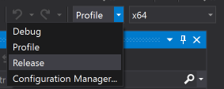

Overview
During development, we utilize Profile or Debug builds - those are builds that aren't fully optimized and contain developer utilities that aid the development of games.
To ship a game we choose to build the engine in a Release configuration, resulting in a build that's fully optimized and strips out systems that users don't have to run into. At the same time, we can pre-compile shaders to ensure that no unnecessary computation has to happen at run-time of your game, in order to maintain optimal performance.
The process of shipping a CRYENGINE game can be broken down into five steps (covered in further detail below):
- Develop the game using Profile builds, compiling shaders with one Remote Shader Compiler (covered further below) - resulting in a stored list of all shader permutations used by your game
- Compile all shader permutations used by your game using ShaderCacheGen.exe
- Archive the compiled shaders
- Run a Resource Compiler job to compile game and engine assets, and archive them
- Compile engine in release mode
Once complete, we'll have a build that can be run by end-users. Keep in mind that the process of shipping on platforms other than desktop will entail extra steps.
Table of Contents
Shader Cache
During development, we compile shaders on-demand whenever an effect or object requests a specific permutation. However, this incurs a significant performance cost and will cause stalls during gameplay. To prevent this, we use the Remote Shader Compiler to compile all shaders requested by developers and testers in Profile builds, and store the required permutations in a text file. If this is done during the full development of a game, eventually we will have a complete list of all required shader permutations to run the game.
Once we are ready to ship, we can then use the Shader Cache Generator to parse the text file containing all required shader permutations for our game, and compile them. We can then create .pak archives containing our shader cache, allowing our game to quickly load all required shader binaries into memory at start-up - resulting in a build where no shader has to be compiled at run-time.
Using the Remote Shader Compiler
The Remote Shader Compiler is contained in the <engine folder>/Tools/RemoteShaderCompiler/ directory, and can be run via the CrySCompileServer.exe executable. Once run, any number of profile builds from other machines (assuming that the address and port 61453 is reachable) can connect to it in order to request shader compilation.
In order to connect to a remote shader compiler, you will need to set the r_ShadersRemoteCompiler CVar to 1 at start-up, and r_ShaderCompilerServer to the IP address of the machine you want to connect to. For example, this can be put into your .cryproject as below:
{ "name": "r_ShadersRemoteCompiler", "value": "1" },
{ "name": "r_ShaderCompilerServer", "value": "127.0.0.1" }Instead of compiling shaders locally, the game (and Editor) will then contact the shader compiler server any time a permutation is missing from the local cache. If compilation is successful, the remote shader compiler returns the compiled shader and stores the permutation under <engine folder>/Tools/RemoteShaderCompiler/Cache/Assets/ShaderList_PC.txt.
Make sure to keep a copy of the shader list, it might make sense to check it into version control as it is vital to have an up to date list of shader permutations used for the game - in case a release build needs to be created at any point in time.
Compiling the Shader Cache
The Shader Cache Generator is contained as <engine folder>/bin/win_x64/ShaderCacheGen.exe, and is used to compile all permutations specified in a shader list (see the section above) in one go - providing a cache that can then be archived and sent to end-users.
To run the Shader Cache Generator, we first need to copy our shader list from the remote shader compiler, in our case <engine folder>/Tools/RemoteShaderCompiler/Cache/Assets/ShaderList_PC.txt. This should be copied to <project folder>/USER/ShaderList.txt.
We can then run the following command:
bin/win_x64/ShaderCacheGen.exe -noprompt -anygpu +r_driver=DX11 +r_ShadersAsyncCompiling=3 +r_ShadersAsyncMaxThreads=16 +r_ShadersUserFolder=1 +r_ShadersUseInstanceLookUpTable=1 +r_ShadersSubmitRequestline=0 +r_ShaderTarget=DX11 +r_PrecacheShaderListThis should start the Shader Cache Generator, and immediately start compiling a DX11 shader cache into the USER directory. Once complete, you can follow the steps in the section below to create the shader cache archives.
Creating the Shader Cache Archives
Once we've compiled the shader cache, we need to archive it into .pak files to be loaded by the engine on start-up. This can be done by running the <engine folder>Tools/PakShaders.bat script as follows:
Tools/PakShaders.bat d3d11 .The first parameter taken is the platform we compiled compilers for, in our case DX11. The second parameter denotes the engine root directory, in our case the current directory.
Once complete, the shader cache archives will be output to the Engine/ directory where they can be included in a release build.
Compiling and Archiving Assets
The Resource Compiler allows for creating jobs, an XML definition of how a project should be packaged. This job can be run to automatically compile textures and objects for the target platform, and creating .pak files that can be read by the end-user.
An example can be seen below:
<RCJobs>
<DefaultProperties
src="https://www.cryengine.com/docs/static/engines/cryengine-5/categories/"
tmp="RCTemp_${p}"
trg="${src}/RCOut_${p}"
/>
<Properties src_assets="${src}/Assets" tmp_assets="${tmp}/assets" trg_assets="${trg}/assets" src_engine="${src}/Engine" />
<PakEngineAssets>
<Job input="${src}/Engine/*.tif" targetroot="${tmp}/" imagecompressor="CTsquish" streaming="0" />
<Job Input="${src_engine}/*.cfg;${src_engine}/*.thread_config;${src_engine}/*.xml;${src_engine}/*.txt;${src_engine}/*.mtl;${src_engine}/*.cgf;*${src_engine}/*.pfxp;${src_engine}/*.lut;${src_engine}/*.dat;${src_engine}/*.ttf;${src_engine}/*.ext" Zip="${trg}/Engine/Engine.pak" />
<!-- Copy DDS files in Engine folder that don't have tifs -->
<Job Input="${src}/Engine/*.dds" Zip="${trg}/Engine/Engine.pak" />
<!-- Move converted tifs -->
<Job Input="${tmp}/Engine/*.dds" Zip="${trg}/Engine/Engine.pak" />
</PakEngineAssets>
<Animations>
<Job input="*.i_caf" animConfigFolder="Animations" sourceroot="${src_assets}" targetroot="${tmp_assets}" cafAlignTracks="1" dbaStreamPrepare="1"/>
<Job sourceroot="${src_assets}" input="Animations/*.xml;Animations/*.animevents;Animations/*.bspace;Animations/*.comb;Animations/*.adb;Animations/*.chrparams" zip="${trg_assets}\Animations.pak" Zip_SizeSplit="1" Zip_MaxSize="1900000"/>
<Job sourceroot="${tmp_assets}" input="Animations/*.dba;Animations/*.img" zip="${trg_assets}\Animations.pak" Zip_SizeSplit="1" Zip_MaxSize="1900000"/>
</Animations>
<Audio>
<Job sourceroot="${src_assets}" input="Audio/ace/*.xml;Audio/Wwise/Sounds.bnk" zip="${trg_assets}\Audio.pak" Zip_SizeSplit="1" Zip_MaxSize="1900000"/>
</Audio>
<GameData>
<Job sourceroot="${src_assets}" input="Libs/*.xml;*.pfx;Libs/*.mtl;Libs/*.swf;*.schematyc_ent;*.schematyc_lib;Materials/*.mtl" zip="${trg_assets}\GameData.pak" Zip_SizeSplit="1" Zip_MaxSize="1900000"/>
</GameData>
<Objects>
<Job sourceroot="${src_assets}" input="Objects/*.cgf;Objects/*.dds;Objects/*.mtl;Objects/*.cdf;Objects/*.chr;Objects/*.skin;Objects/*.chrparams" zip="${trg_assets}\Objects.pak" Zip_SizeSplit="1" Zip_MaxSize="1900000"/>
</Objects>
<Textures>
<Job input="${src_assets}/*.tif" targetroot="${tmp_assets}" imagecompressor="CTsquish" streaming="0" />
<Job Input="${tmp_assets}/*.dds" Zip="${trg}/Assets/Textures.pak" Zip_SizeSplit="1" Zip_MaxSize="1900000"/>
</Textures>
<Run Job="PakEngineAssets" />
<Run Job="Animations"/>
<Run Job="Audio"/>
<Run Job="GameData"/>
<Run Job="Objects"/>
<Run Job="Textures"/>
</RCJobs>This example will compile assets that need to be changed for the target platform, and output .pak archives into a RCOut_PC/ directory at the root of the project.
This can be run as follows:
Tools/rc/rc.exe /job=MyJob.xml /threadsDepending on the size of your project, this can take a while. Once complete, we can move the shader cache archives we created into the RCOut_PC/ directory. This will give us a complete asset package that, after we follow the steps below on building the engine, can be run and sent out to end-users.
Compiling Code in Release Mode
This section assumes that you have already read Building the Engine from Source Code. Once you have a solution containing both the engine and your project, simply change the configuration mode to Release:

In addition, it is recommended to enable OPTION_STATIC_LINKING in CMake when building a release configuration. This ensures that all CRYENGINE binaries get linked into one main executable.
Once built, you can run the build through bin/win_x64_release.
Packaging the Final Build
When shipping a build to your end-users, always consult the table below to determine what you are allowed to ship - and to ensure that you don't ship data that can't be used.
Be careful to not ship the bin/win_x64/ or bin/win_x64_debug/ or Editor/ folders to end-users. This is not permitted by the CRYENGINE EULA - if you have a need to ship the Editor to users, please contact Crytek directly.
| Folder / Files | Notes |
|---|---|
| bin/win_x64_release/*.dll bin/win_x64_release/*.exe | Shipped by Crytek in the Launcher package, but can be compiled using GitHub source code (see Compiling Code in Release Mode above). |
| Engine/*.pak | Shipped by Crytek in the Launcher package, but can be compiled with RC jobs and/or combined with custom shader cache. |
| Assets/ | Project-specific, should be compiled and archived - see Compiling and Archiving Assets above. |
| Game.cryproject | Contains settings the engine requires to start your game. |
Once you've copied the files above to their own directory, you should have a completely independent build that can be tested or redistributed. Make sure to test that your entire project works when running any of the executables, without having to add any additional files.
If you wish to be able to debug crash-dump files generated by your project, make sure to keep a copy of all the .pdb files that matches the binaries you redistribute. That way, you can load error.dmp files from end-users and have (limited) information that might point you to the cause of the crash (in addition to the limited log files).
Redistributing via a specific publishing platform (i.e. Steam) is outside the scope of this document. We advise that you read the documentation provided by the publishing platform to find out how it works. In general and as long as the end-users folder structure matches the one that is described here, there shouldn't be any issues.
Conclusion
This concludes the article on releasing a CRYENGINE project. You can now create full builds of a project that can be shipped to end-users by uploading to a Steam depot, for example.